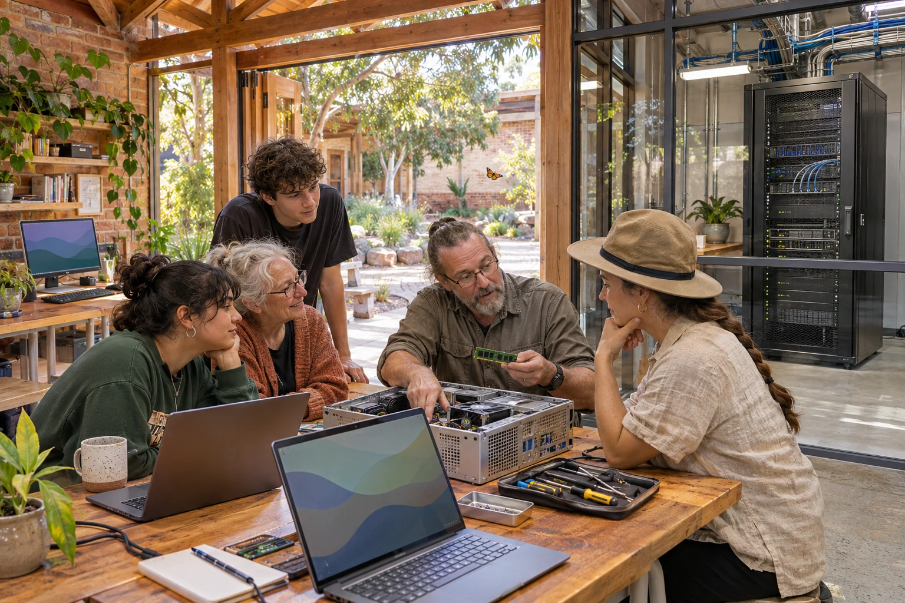

When intelligence becomes infrastructure
AI matters beyond the screen when the software, electricity, machines and authority to act become part of the same system.
Superintelligence and Australia
A guide to the forces behind the AI race, and the choices Australia can make while its next layer of infrastructure is being built.
An imagined future, with choices still open. AI-generated concept image. Image credits
Start with the words
An AI model is learned software. It runs on computers that need chips, power, cooling and communications. More capable systems also depend on people, investment, factories and the rules that govern access and use.
Superintelligence describes a possible level of AI that exceeds human capability across many areas. The paper explores how progress towards that level could interact with industry, robotics and political authority. Its future figures are conditional scenarios, explained through their assumptions.
Sovereignty asks who has effective authority. For a connected system, that includes who controls updates, permissions, data, maintenance and the power to pause or stop it.

AI matters beyond the screen when the software, electricity, machines and authority to act become part of the same system.
The race combines model developers, cloud companies, factories, investors and governments. Their figures measure different things, and their ownership structures differ.
Orbital power, reusable transport, factories, robotics and materials discovery form a possible feedback loop. The paper turns that possibility into requirements people can examine.
The ability to act through tools and machines raises practical questions about permission, updates, procurement, local control and the right to challenge a decision.
The paper tests conditional paths to 2027, 2028, 2029, 2031 and 2036. Its figures make assumptions visible and identify the delivery evidence to watch.
Shared local equipment, personal Auras, carefully governed connections and civic practice address different parts of the same question about who gets to act.
The source paper is dated 5 November 2026. Corporate dollar amounts are US dollars unless marked Australian dollars. Reported measurements, company ambitions and scenario calculations have different meanings.